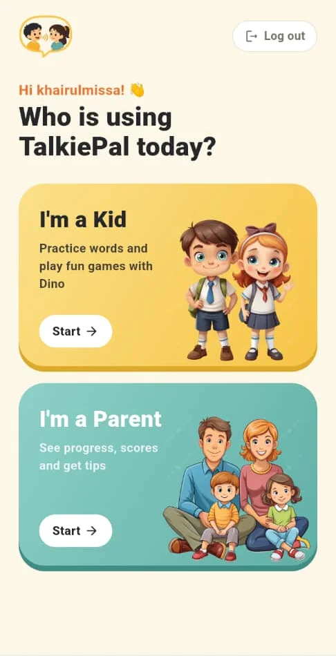
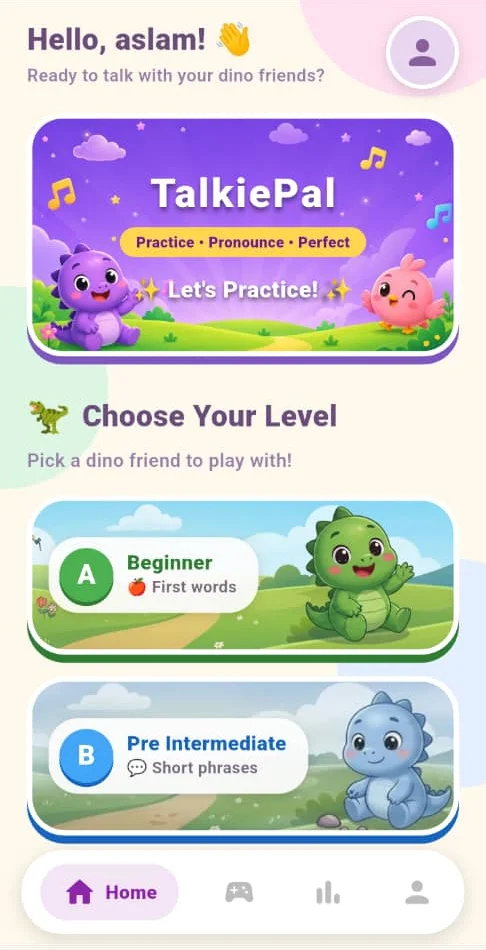
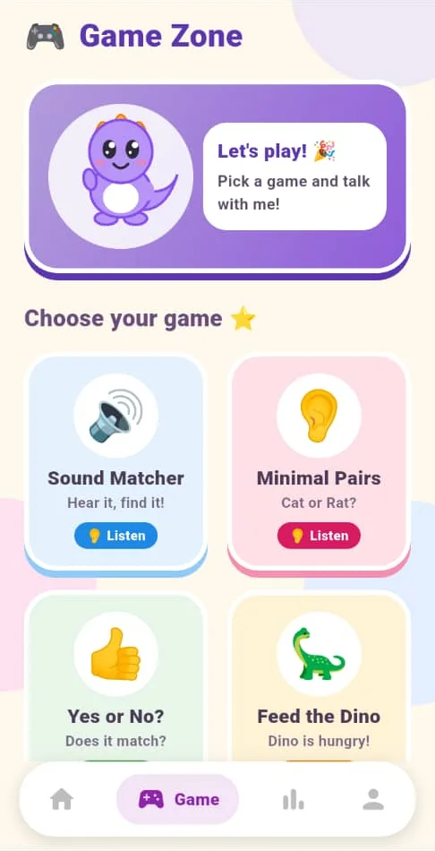
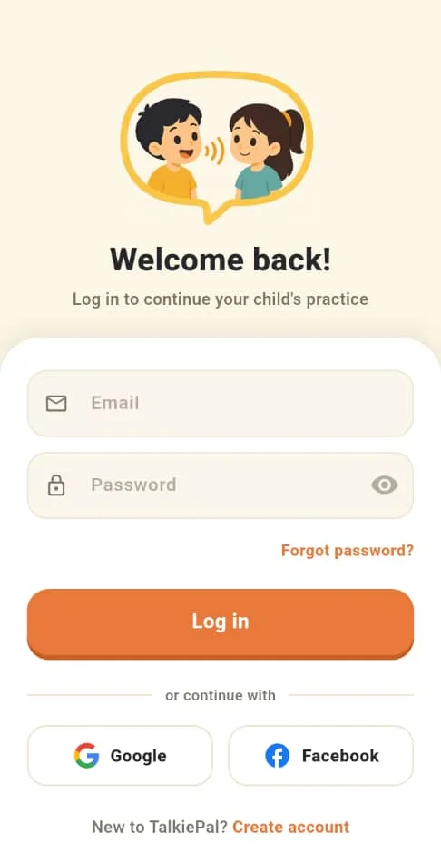
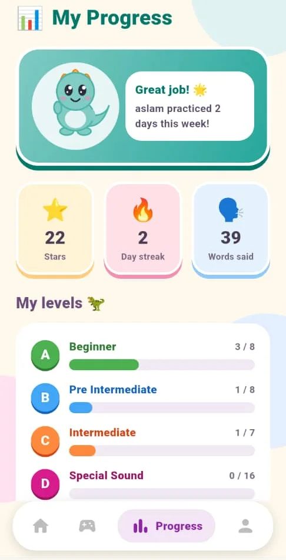
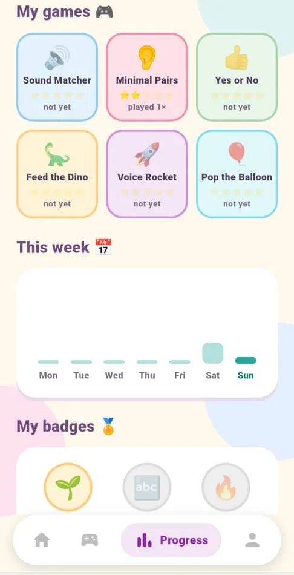

One friendly guide
Dino, the mascot, appears across the app and talks to the child (“Pick a game and talk with me!”). A familiar character makes each new screen feel safe.
Case study · Final year project
Pronunciation practice for children with speech and language disorders, made into games, with parents following their child’s progress at home.



Children with speech delays need to practise every day, but therapy sessions are short and far apart. Practice at home is repetitive, so children lose interest, and parents can’t easily tell whether it’s working or which sounds still need help.
TalkiePal turns practice into short games guided by a friendly dinosaur. Children say words out loud and get instant feedback from the phone’s speech recognition, while an AI model creates fresh practice words for every session. Parents see what to practise next, and therapists can follow up through the app.
My part
My teammate’s part
The users are young children, some of them autistic, so every screen had to be calm, predictable and easy to tap.
Dino, the mascot, appears across the app and talks to the child (“Pick a game and talk with me!”). A familiar character makes each new screen feel safe.
Large cards with one picture and one short label each, colour-coded levels, and a simple four-icon bottom bar. No small text links for children to miss.
A warm cream background with soft pastel cards, so the screen never feels loud. Strong colour is kept for the one thing to tap next.
Results show stars, never a fail screen. When a score is low, “Try again” becomes the main button. A light vibration tells the child when the mic is ready to listen.
From login to the first game in four taps. A parent logs in once and then hands the phone to the child.

1. Parent logs in with email, Google or Facebook.
2. Pick who’s using it. Kid and parent spaces are kept apart.
3. Choose a level. Each level has its own dino friend.
4. Play. Listening and speaking games, each one tap away.


Kid side · my page
Children don’t read percentages, so their progress page uses things they already know from games: stars, streaks and badges.
Parent side · my page
A score on its own doesn’t help a parent at home. The parent progress page turns every session into a short to-do list.